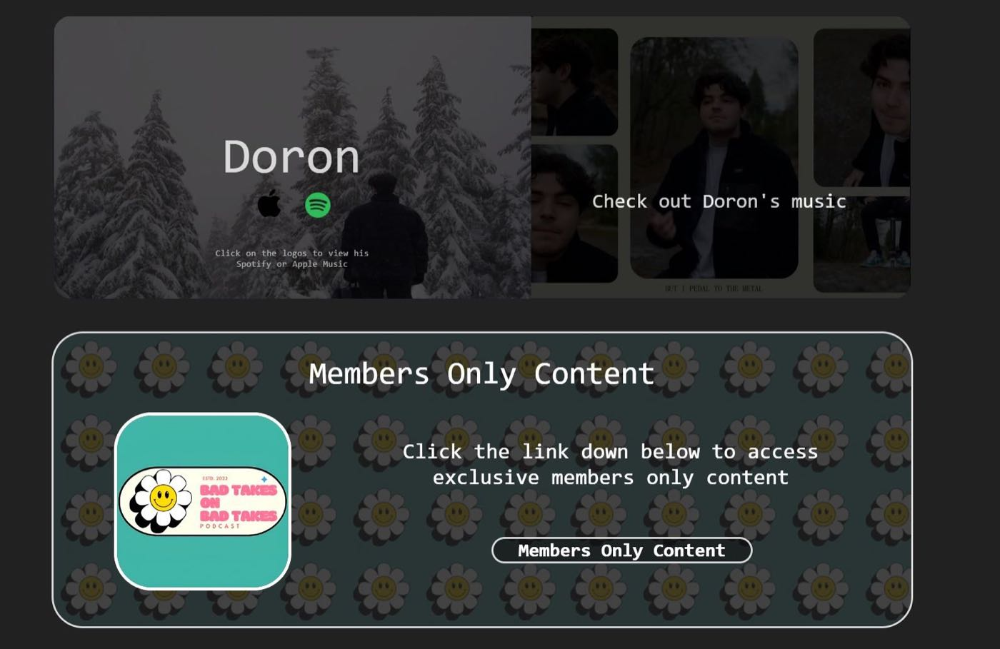

Overview
When I was tasked with making a responsive website as a final project for my COMP 2681 web design course, I decided to reach out to a friend who runs a local media brand to see if he would like me to build a website for the brand.
We had a few pre-development meetings and drafted up some ideas for the functionality and design of the website before I started coding the blueprint. Over the next couple months we had many follow up meetings where I showed him my progress and drafts of ideas and he would give me his input and decide which choices were ultimately made.
In the end, I developed and deployed a fully responsive website for BadTakesTv using HTML, CSS, and Javascript, choosing to host it on cloudflare through a Github repository. I implemented asynchronous API requests to dynamically pull updated content from youtube and spotify, which allowed users to see the latest content produced by the brand when visiting the home page of the website. Overall, my website increased the traffic towards their content by a factor of 10 through SEO optimization and clean UX/UI design.
Gallery


